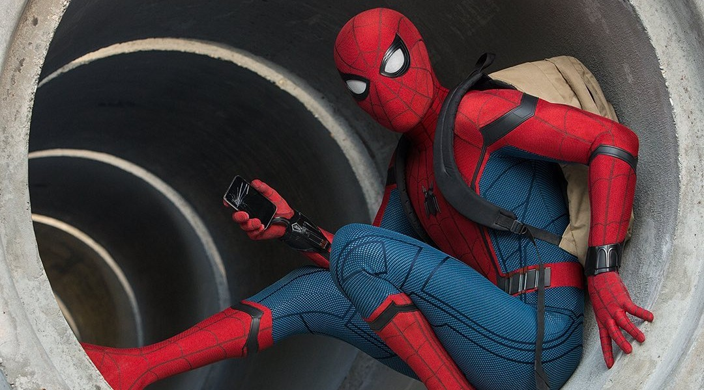
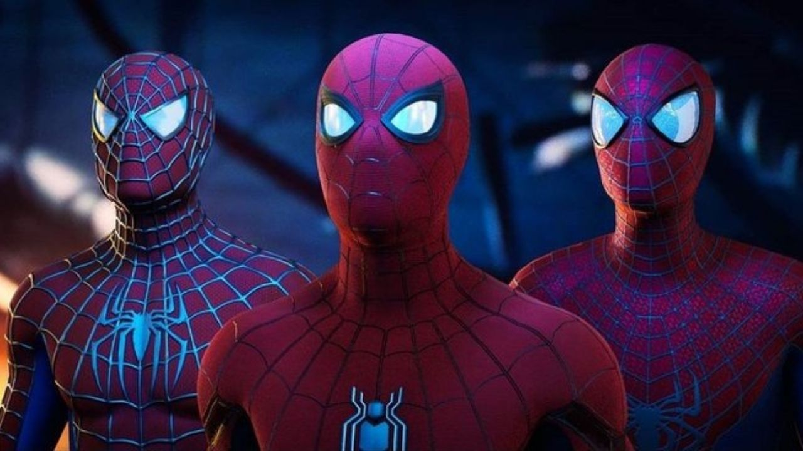

O Homem Aranha também conhecido como Spiderman em outros países é nomeado o maior super heróis entre as gerações do mundo todo
Início do Herói
O personagem foi criado em 1962 por Stan Lee (roteiro) e Steve Ditko (arte), trabalhando na editora Marvel Comics.
Na época, a maioria dos heróis era adulta, forte e confiante. Stan Lee queria algo novo: um herói adolescente com problemas reais.
E ele mal podia imaginar que isso cativaria tantos fãns da Marvel à gostar do personagem.
Primeira aparição do Spiderman nos quadrinhos: